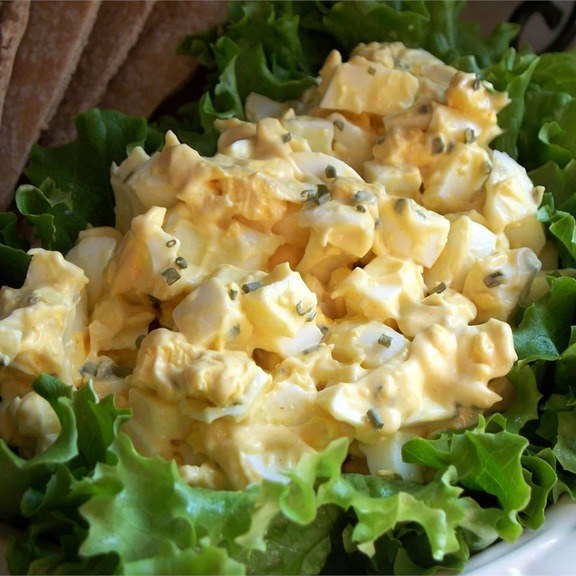

Lasagna Recipes

Delicious Egg Salad for Sandwiches
This is a wonderful-tasting egg salad sandwich that you will definitely devour. It's really good on rye.
Steps
- Place egg in a saucepan and cover with cold water. Bring water to a boil and immediately remove from heat. Cover and let eggs stand in hot water for 10 to 12 minutes. Remove from hot water, cool, peel and chop.
- Place the chopped eggs in a bowl, and stir in the mayonnaise, mustard and green onion. Season with salt, pepper and paprika. Stir and serve on your favorite bread or crackers.